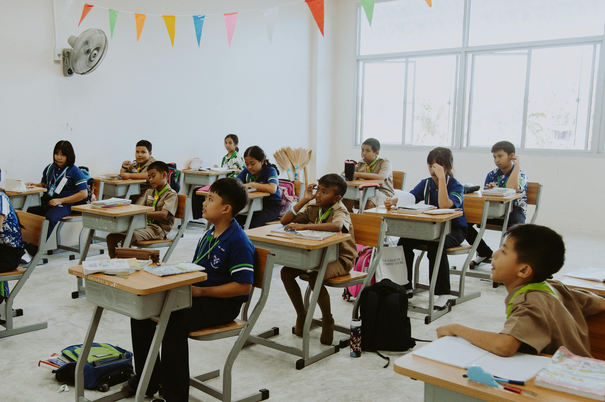
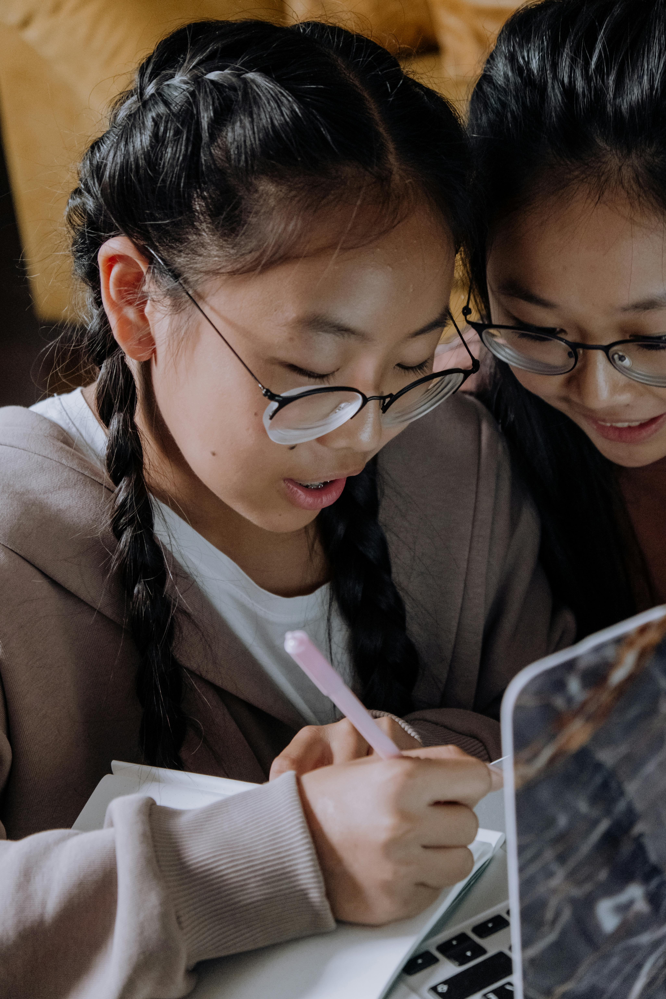
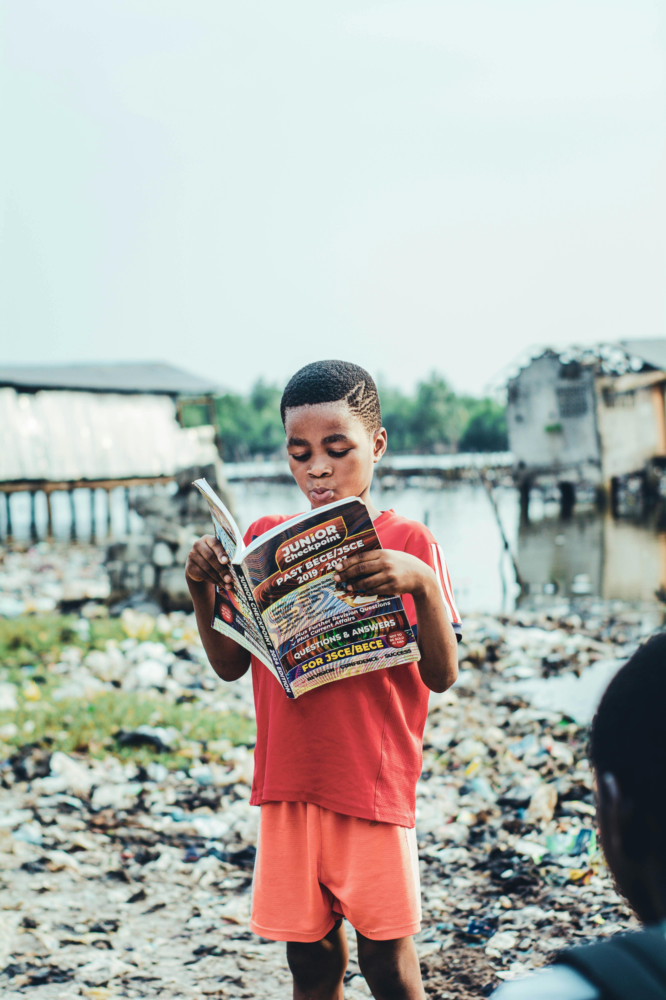
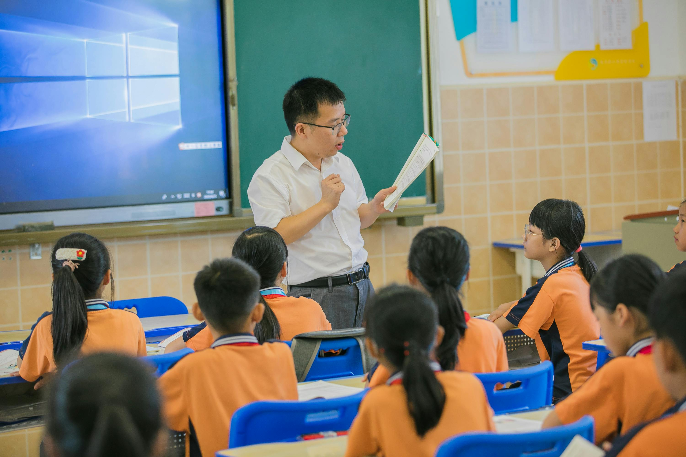

SDG 4: Target 4.1
Ensuring inclusive and equitable quality education for all

What is Target 4.1?
Target 4.1 is part of the United Nations' Sustainable Development Goal 4 (Quality Education). It aims to ensure that by 2030, all girls and boys complete free, equitable, and quality primary and secondary education leading to relevant and effective learning outcomes.
This target goes beyond simply getting children into school. It focuses on the quality of education received, ensuring that students actually learn foundational skills such as reading and mathematics. A child who attends school but does not gain these skills is still considered to be left behind by Target 4.1.
Achieving this target requires addressing deep inequalities across gender, geography, disability, and socioeconomic status. Children in conflict zones, rural areas, and disadvantaged communities remain the hardest to reach, and closing these gaps is central to the mission of Target 4.1.
Key Statistics
Understanding the scale of the challenge helps frame the urgency of Target 4.1.
Children and youth out of school globally
Children unable to read at minimum proficiency level
Of refugee children enrolled in primary school
Girls out of school worldwide

Key Elements of Target 4.1
Target 4.1 is built around several interconnected principles that together define what quality universal education looks like:
- Free education: Primary and secondary schooling must be accessible without financial barriers for all children.
- Equitable access: No child should be excluded based on gender, ethnicity, disability, or economic background.
- Quality learning: Attendance alone is not enough; students must acquire foundational literacy and numeracy skills.
- Completion of full cycles: The goal covers both primary and secondary education, not just initial enrolment.
- Relevant outcomes: Education should prepare young people for further learning and participation in society.

Challenges to Achieving Target 4.1
Despite significant global progress over the past two decades, hundreds of millions of children still lack access to quality education. The COVID-19 pandemic caused major disruptions, with school closures affecting over 1.6 billion learners worldwide and reversing years of gains in literacy and numeracy.
Children in sub-Saharan Africa and South Asia face the greatest barriers, including teacher shortages, inadequate school infrastructure, and poverty that forces children into work instead of education. Girls in particular continue to face cultural and social obstacles that limit their access to secondary schooling.
Percentage of children in low-income countries completing primary school
Success Stories
Progress is being made in many regions through dedicated efforts and innovative approaches.
Vietnam
Vietnam has achieved near universal primary education with high learning outcomes, outperforming many wealthier nations through targeted teacher training and curriculum reform.
Kenya
Kenya's free primary education policy increased enrolment dramatically, with girls now attending school at rates comparable to boys in many regions.
Brazil
Brazil's Bolsa Familia program links cash transfers to school attendance, significantly reducing dropout rates among poor families.
Nepal
Nepal has made significant strides in reducing gender disparity in primary education through community awareness campaigns and girls scholarship programs.

Progress and the Road Ahead
The international community has made commitments through funding bodies such as the Global Partnership for Education (GPE) to support low-income countries in building stronger education systems. Measuring progress towards Target 4.1 relies on indicators such as minimum proficiency levels in reading and mathematics at the end of primary and lower secondary school.
As the 2030 deadline approaches, accelerated action is needed. Governments, NGOs, and communities must work together to ensure no child is left without the foundational education they need to thrive.
How You Can Help Achieve Target 4.1
Everyone has a role to play in ensuring quality education for all children worldwide.
- Action Donate: Support organizations like UNESCO, Save the Children, or local education charities in developing countries.
- Action Volunteer: Join literacy programs or tutor children in underserved communities.
- Action Advocate: Contact local representatives to support international education funding.
- Action Raise Awareness: Share information about SDG 4.1 on social media and within your community.
- Action Support Girls Education: Donate specifically to programs that keep girls in school, such as Malala Fund.
The 2030 Deadline
With less than a decade remaining to achieve Target 4.1, the world must double its efforts. Every child deserves the opportunity to learn, grow, and build a better future.
No child left behind.
Further Reading and Resources
Explore these organizations working to achieve quality education for all:
- UNESCO: Global Education Monitoring Report
- World Bank: Education for All initiatives
- Global Partnership for Education: Supporting education in 87 countries
- Education Cannot Wait: Emergency education for crisis affected children
- UNICEF: Education programs in over 190 countries